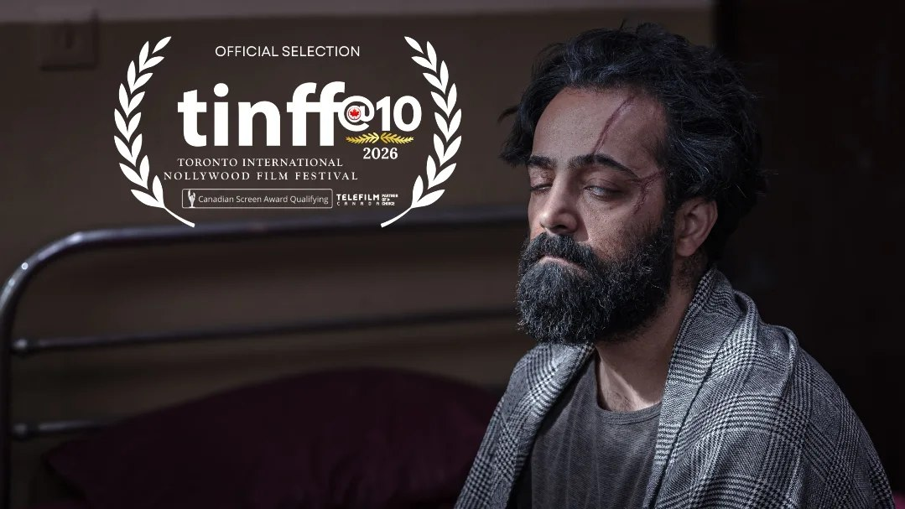

دهمین دوره جشنواره بینالمللی فیلم TINFF، میزبان یکی دیگر از لحظههای درخشان سینمای کوتاه ایران بود؛ جایی که فیلم «ماندالا» ساخته بهنام خسروی موفق شد جایزه بهترین فیلم کوتاه تجربی این دوره را از آن خود کند. این موفقیت، در جشنوارهای رقم خورد که از سوی جوایز سینمایی کانادا (Canadian Screen Awards) بهرسمیت شناخته میشود و همین موضوع، وزن این افتخار را برای سینمای ایران بیشتر میکند.
پیش از این، «ماندالا» در همین دوره از TINFF در دو بخش جداگانه نامزد دریافت جایزه شده بود؛ نشانهای از استقبال هیئت داوران از این اثر که اکنون با کسب عنوان بهترین فیلم کوتاه تجربی، به ثمر نشسته است. حضور مستمر آثار کوتاه ایرانی در فهرست برگزیدگان جشنوارههای بینالمللی، بار دیگر نشان میدهد که سینمای کوتاه ایران همچنان یکی از صداهای قابلتوجه در عرصه جهانی است.
در آیین اختتامیه جشنواره، سرکار خانم سحر با حضور در مراسم، این جایزه را به نمایندگی از عوامل فیلم دریافت کرد. عوامل «ماندالا» ضمن تشکر صمیمانه از ایشان، قدردانی ویژهای نیز از برگزارکنندگان جشنواره و اعضای هیئت داوران TINFF بهخاطر توجه به این اثر ایرانی داشتند.
بهنام خسروی که در کارنامه خود همزمان نویسندگی، فیلمنامهنویسی و کارگردانی «ماندالا» را دارد، با این جایزه تازه یکبار دیگر ثابت کرد که آثار مستقل ایرانی میتوانند در رقابت با نمونههای بینالمللی، جایگاهی درخور بیابند. این موفقیت، حلقهای تازه از زنجیره حضورهای بینالمللی «ماندالا» در فصل اخیر جشنوارههاست.
سینمای کوتاه ایران در سالهای اخیر بارها نشان داده که با وجود محدودیتهای تولید و بودجه، میتواند در سطح جهانی رقابتپذیر باشد. حضور مستمر آثاری مانند «ماندالا» در جشنوارههای معتبری چون TINFF، بخشی از همین روند رو به رشد است؛ روندی که طی آن فیلمسازان مستقل ایرانی با تکیه بر روایتهای شخصی و فرمهای تجربی، توانستهاند نگاه داوران بینالمللی را به خود جلب کنند.
جشنواره TINFF تورنتو، بهعنوان رویدادی مورد تأیید جوایز سینمایی کانادا، هر ساله میزبان صدها اثر از فیلمسازان کشورهای مختلف است و رقابت برای راهیابی به بخشهای اصلی آن، بهویژه بخش تجربی، معمولاً بسیار فشرده است. برگزیدهشدن «ماندالا» در چنین فضای رقابتی، اهمیت این موفقیت را برای سینمای ایران دوچندان میکند.
با این جایزه، نگاهها اکنون به ادامه مسیر جشنوارهای «ماندالا» و همچنین پروژههای بعدی بهنام خسروی معطوف شده است. تیم مستر شورتفیلم این موفقیت را نمونهای دیگر از توانایی سینمای کوتاه ایران برای درخشیدن در عرصههای بینالمللی میداند.
مستر شورتفیلم بهعنوان پایگاه خبری فیلم کوتاه، این موفقیت را رویدادی مهم برای سینمای ایران در کانادا میداند و روند حضور «ماندالا» در جشنوارههای آتی را با دقت پیگیری و منتشر خواهد کرد.